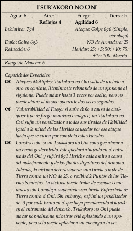

|  |
Si detectan a los PJs, el ejército enviará tras ellos a un Tsukakoro no Oni,
una especie de jaula de huesos que rebota de un lado a otro y se colapsa sobre el cuerpo de cualquier
cosa a la que agarre.
Para poder dejar atrás a la criatura será necesario superar una tirada de Equitación NO de 30, y a
menos que hayan dejado la puerta abierta, entrar de nuevo en los túneles les llevará al menos un asalto adicional
y necesitarán superar una tirada de Atletismo/Fuerza NO de 25.
El Tsukakoro no cabe dentro.
|